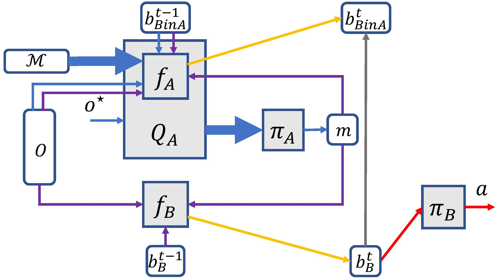
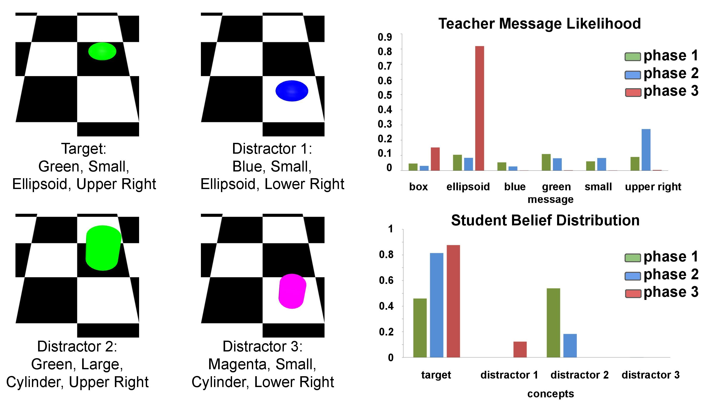

Abstract
Pragmatics studies how context can contribute to language meanings. In human communication, language is never interpreted out of context, and sentences can usually convey more information than their literal meanings. However, this mechanism is missing in most multi-agent systems, restricting the communication efficiency and the capability of human-agent interaction. In this paper, we propose an algorithm, using which agents can spontaneously learn the ability to “read between lines” without any explicit hand-designed rules. We integrate the theory of mind (ToM) in a cooperative multi-agent pedagogical situation and propose an adaptive reinforcement learning (RL) algorithm to develop a communication protocol. ToM is a profound cognitive science concept, claiming that people regularly reason about other’s mental states, including beliefs, goals, and intentions, to obtain performance advantage in competition, cooperation or coalition. With this ability, agents consider language as not only messages but also rational acts reflecting others' hidden states. Our experiments demonstrate the advantage of pragmatic protocols over non-pragmatic protocols. We also show the teaching complexity following the pragmatic protocol empirically approximates to recursive teaching dimension (RTD).
Pipeline

ToM Agents Interaction Pipeline. First, the teacher chooses a message according to the context and her prediction of the student’s reaction (blue arrows). After a message is sent, the student updates his belief and the teacher updates her estimation of student’s belief (purple and orange arrows). Then, the student either waits or selects a candidate (red arrows). Only in the training phase, the actual student belief will be returned to the teacher (gray arrow). Bold arrows stand for the whole message space being passed.
3D Objects Referential Game Example

We show the message distribution for the target and student’s new belief after receiving the most probable message. As for the teacher’s message distribution for distractors, all probability weights concentrate on the unique identifiers after the first phase of training. Student’s belief illustrates that teacher’s most probable message, though consistent with multiple candidates, can successfully indicate the target with more confidence as training goes. In general, both agents' behavior becomes more certain, and the certainty coordinates.
Junhong Shen
Undergraduate in Math. of Comp.
My research interests include theories and applications of reinforcement learning and machine learning.